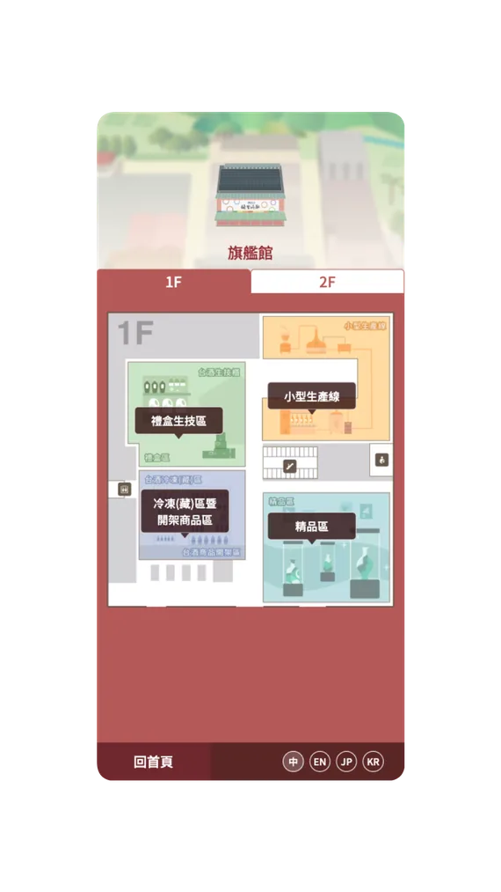
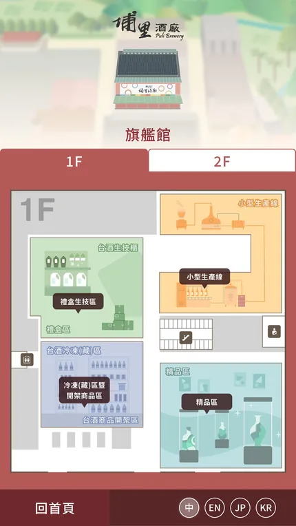
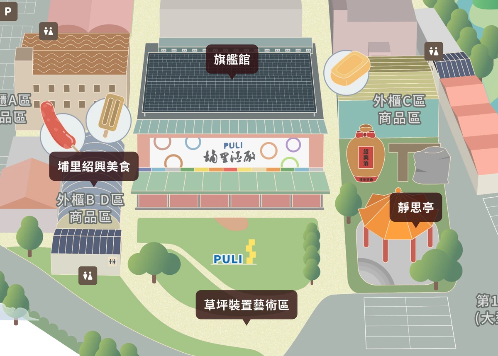
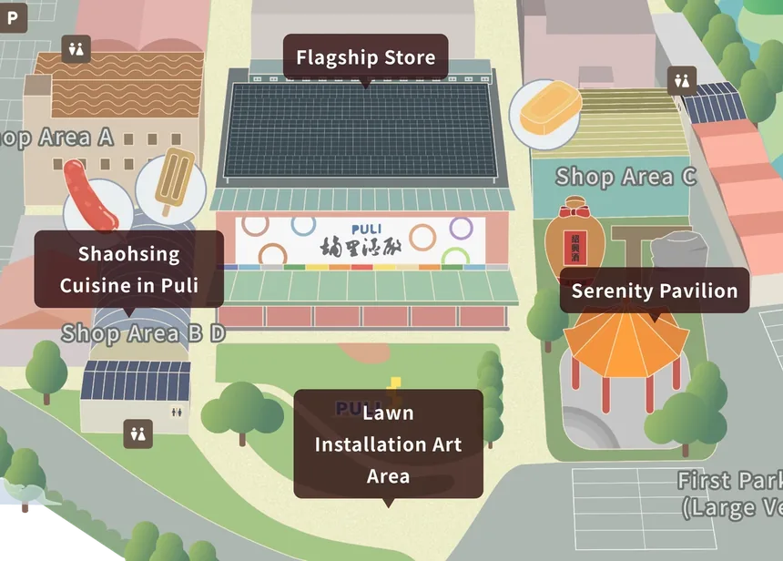
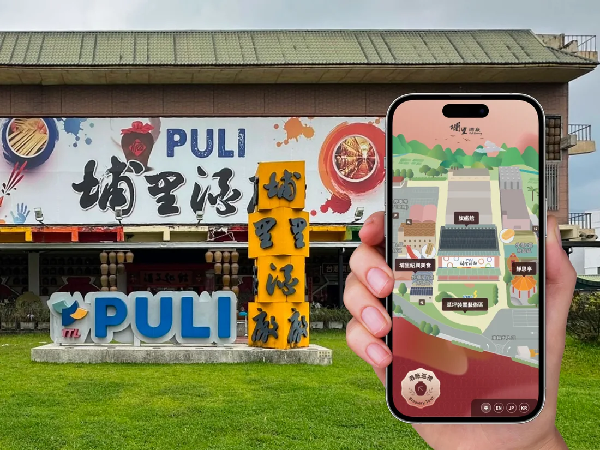

為埔里酒廠訪客設計園區導覽，透過地圖查看景點與樓層，或掃描現場 QR Code 直接閱讀景點內容。支援中、英、日、韓四語，並依桌機瀏覽器、手機與 43 吋 Kiosk 的使用情境調整介面配置。
查看上線網站 ↗主要參與需求討論與現場勘查，負責資訊架構、操作流程、Wireframe、跨裝置 UI 與手繪導覽地圖，也設計 QR 入口流程、現場標示牌與景點介面。AI 導覽是既定需求，我負責使用者端的入口與內容銜接。
我在 Figma 整理共用元件與介面規範，與 PM、工程團隊合作。工程切版後，我與團隊在桌機瀏覽器、手機與 43 吋 Kiosk 上測試並調整。
設計前，我到埔里酒廠查看並拍攝現場，與酒廠人員確認需求。首頁以手繪園區地圖呈現，點選景點標籤即可查看對應內容；旗艦館這類有多個樓層的場館，則以 1F／2F 頁籤切換。
手繪風格是依客戶需求與團隊提案確定的。投標階段我用 Stable Diffusion 探索風格，正式地圖則依現場的道路、建築與景點位置，以 Illustrator 與 Photoshop 繪製。

地圖色彩鮮豔，部分場館位置相近，標籤容易遮住建築或彼此干擾。我選用半透明深咖啡底搭配白字，考量辨識度與品牌視覺，也減少對地圖的遮擋；調整標籤位置時，仍讓每個標籤對應到正確的場館。

手機與 Kiosk 一次只能顯示部分地圖。我預判訪客可能不知道地圖可以拖曳，甚至以為畫面沒有正常顯示，因此提出加入左右拖曳提示。提示短暫出現，滑動地圖後就消失，不持續遮擋內容。

掃描 QR Code 直接進入景點頁是專案的既定需求。我負責入口流程、現場標示牌與景點介面：訪客在景點旁掃碼，打開的就是同一個景點的內容。


手機與 Kiosk 使用共用的介面元素，但不是直接等比例放大。設計 Kiosk 介面時，我考量螢幕放大後的操作距離，以及不同身高訪客的觸及範圍，將原本位於網頁右側的「語言切換」移至下方，再透過上機測試確認與調整配置。


手機與 Kiosk 共用樓層頁籤、POI、按鈕與語言切換等介面元素。我在 Figma 整理這些共用元件與介面規範，再依螢幕比例調整配置。


動態效果方面，我曾蒐集地圖雲朵、鳥群與縮放回彈等效果的實作方式，與工程端討論；經 PM 與工程評估後，團隊決定減少非必要的裝飾，優先考量導覽操作與裝置效能。
導覽需要支援中文、英文、日文與韓文。設計初期，我就將較長的英文名稱納入考量，規劃地標文字的呈現方式。地標標籤依名稱長短調整寬度，但共用同一個最大寬度；超過上限的英文名稱會分行呈現，避免標籤過寬而遮住相鄰的場館。設計過程中，我一邊預覽、一邊修正，並在交付文件中註明注意事項；工程完成切版後，再上機測試與調整。
語言切換、「酒廠巡禮」浮動按鈕等元件，也在 Figma 以 Components／Variants 整理出各語系的版本。


專案在 90 個工作天的時程內，由 PM、工程團隊與我共同完成上線，涵蓋 13 個景點與四種語言。我交付導覽 UI、手繪地圖、入口流程與現場標示牌，以及 Figma 共用元件與介面規範；上線後也到埔里現場操作行動版。


共用元件不代表所有裝置都使用相同配置。這次設計需要同時考慮 Kiosk 的操作距離與多語文字長度，並在工程交付與實機測試時，持續確認設計稿中的配置是否合適。